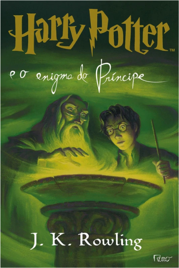
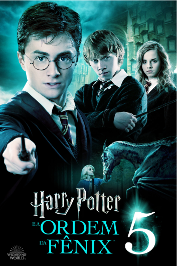

Livro 6
Harry Potter e o Enigma do Príncipe
Resumo
"Harry Potter e o Enigma do Príncipe" é o sexto livro da série "Harry Potter", escrita por J.K. Rowling. A história começa com o retorno de Harry à Escola de Magia e Bruxaria de Hogwarts para seu sexto ano de estudos. Alguns dias após o confronto com Voldemort e os Comensais da Morte no Ministério da Magia, Harry Potter é levado por Albus Dumbledore até o povoado de Buddleigh Baberton, onde conhece Horácio Slughorn, o antecessor de Severus Snape ao cargo de professor de Poções na Escola de Magia e Bruxaria de Hogwarts. Cansado de fugir dos Comensais que querem forçá-lo a juntar-se a eles, Slughorn aceita retornar à Hogwarts. Dumbledore confidencia a Harry que ele deverá ficar próximo do professor e depois o envia para à Toca, lar da família Weasley, onde Harry reencontra seus amigos Ron Weasley, Hermione Granger e Ginny Weasley, por quem passa a se sentir atraído. Paralelamente, na Rua da Fiação, Snape recebe a visita de Bellatrix Lestrange e sua irmã, Narcissa Malfoy, a quem Snape faz um Voto Perpétuo de que irá proteger o filho dela, Draco, que recebeu uma perigosa missão.
No dia seguinte, Harry e seus amigos visitam o Beco Diagonal, que está praticamente abandonado após sucessivos ataques dos Comensais da Morte, e veem Malfoy, a quem seguem até uma loja antiga. Lá, eles presenciam uma reunião entre eles e alguns Comensais, incluindo o lobisomem Fenrir Greyback, e ficam convencidos de que Draco foi efetivado. No Expresso de Hogwarts, Harry tenta espionar Malfoy usando a Capa da Invisibilidade, mas é descoberto e petrificado pelo menino, que o deixa no vagão para retornar à Londres contra sua vontade. Porém, Harry é salvo por Luna Lovegood e, a pedido de Dumbledore, começa a assistir as aulas de Poções do professor Slughorn, enquanto Snape é promovido ao cargo de professor de Defesa Contra as Artes das Trevas.
Como não possui o material necessário para a aula, Harry começa a usar um livro antigo que um dia foi propriedade de alguém conhecido como o "Príncipe Mestiço". Graças a uma série de encantos e dicas escritas à mão, Harry torna-se o melhor aluno da classe e ganha do professor Slughorn um frasco de Felix Felicis, a Poção da Sorte. Harry torna-se capitão do time de Quidditch da casa de Gryffindor e começa um relacionamento com Ginny. Paralelamente, Ron, que entrou como goleiro para o time, começa a namorar a grudenta Lavender Brown, após ser enfeitiçado com a "poção do amor", o que deixa Hermione com ciúmes. Porém, o relacionamento não dura.
Dumbledore eventualmente conta a Harry o motivo pelo qual ele precisa que Harry fique próximo de Slughorn: muitos anos antes, Slughorn foi o professor predileto de Tom Riddle, o jovem que viria a tornar-se Lorde Voldemort. Dumbledore descobriu que Slughorn acidentalmente contou a Riddle sobre um poderoso feitiço que permitiria a Riddle tornar-se imortal. Dumbledore coletou esta memória na Penseira, mas descobriu que Slughorn a adulterou por vergonha. Ele precisa da verdadeira memória para descobrir o nome do feitiço. Usando a Felix Felicis, Harry convence Slughorn a entregar-lhe a verdadeira memória e o feitiço: a maldição das Horcruxes.
Horcruxes, Harry descobre, são objetos nos quais um indivíduo pode depositar parte de sua alma para continuar vivo caso seu corpo seja destruído. Isso é alcançado através do assassinato de uma pessoa. Voldemort, obcecado pelo imortalidade, dividiu sua alma em sete pedaços, criando seis Horcruxes: O diário de Tom Riddle; O anel de sua mãe, O medalhão de Salazar Slytherin; a taça de Helga Hufflepuff; O diadema de Rowena Ravenclaw e a serpente Nagini. Duas já foram destruídas (o diário e o anel), e uma terceira foi localizada por Dumbledore: o medalhão.
Harry e Dumbledore viajam para uma caverna, onde recuperam a Horcrux, que estava sob a proteção de um poderoso encantamento em um rocha cercada por seres sobrenaturais conhecidos como os Inferi. Ao retornarem à Hogwarts, eles descobrem que Draco usou um Armário Sumidouro esquecido na Sala Precisa, cujo par está localizado na Travessa do Tranco, para abrir as portas do castelo aos Comensais da Morte. Draco revela que sua missão é matar Dumbledore, mas não consegue ir até o fim. Snape cumpre o Voto Perpétuo matando Dumbledore. Harry, furioso, tenta vingar a morte de seu mentor, mas é derrotado por Snape, que parte junto com o resto dos Comensais da Morte, mas não sem antes revelar que ele é o Príncipe Mestiço.
Um funeral é feito para Dumbledore e os alunos são enviados de volta a suas casas. Harry decide que não irá retornar no ano seguinte e, ao invés disso, irá caçar e destruir as Horcruxes restantes. Ron e Hermione decidem acompanhá-lo. Harry é surpreendido ao descobrir, dentro do medalhão, um recado de um certo R.A.B., avisando que ele roubou o verdadeiro medalhão e iria destruí-lo, o que significa que ainda restam quatro Horcruxes, e não três.
Poster do Filme
Trailer
Curiosidades
- Originalmente, J.K. Rowling planejava que o livro fosse intitulado "Harry Potter e o Príncipe Mestiço", mas ela mudou de ideia depois de perceber que o mistério em torno da identidade do príncipe era um dos principais pontos de enredo do livro.
- O livro foi lançado em 2005, dois anos após o lançamento do quinto livro da série, "Harry Potter e a Ordem da Fênix". Durante esse período, os fãs da série tiveram que esperar ansiosamente pelo lançamento do próximo livro, o que contribuiu para a enorme expectativa em torno do lançamento de "O Enigma do Príncipe".
- O livro inclui muitas referências históricas e mitológicas, incluindo a lenda do Rei Arthur e a história de Tom Riddle, que compartilha seu nome com um famoso vilão da literatura inglesa, Tom Riddle, de "As Aventuras de Tom Jones".
- Em uma cena do livro, Harry beija Gina Weasley pela primeira vez. Esse momento foi um dos mais aguardados pelos fãs da série, que estavam torcendo pelo romance dos dois personagens desde o início da série.
Galeria de imagens